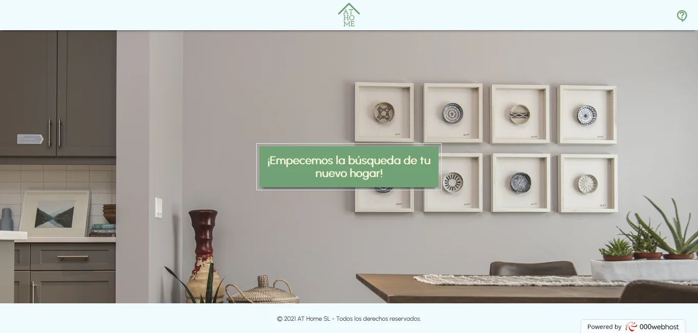

Inmobiliaria
Proyecto final de Deusto Formación, se trata de una página web que simula una inmobiliaria, tanto los datos como imágenes son totalmente referenciales. Está creada con código HTML, CSS y JavaScript. Posee una base de datos en MySQL, la conexión a dicha base de datos está hecha mediante PHP. Tanto el dominio como el hosting de la web son gratuitos. Actualmente no está adaptado a móviles.